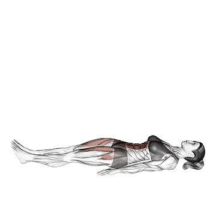

中級平均次數
一般中級訓練者的參考值。
男性
33
女性
26
仰臥抬腿平均次數
| 等級 | ||
|---|---|---|
| 初學者 | < 1 | < 1 |
| 初級者 | 6 | 7 |
| 中級者 | 33 | 26 |
| 進階者 | 72 | 51 |
| 菁英 | 117 | 80 |
註：這些數值是單組可完成平均次數的估算。體重、活動範圍、節奏等個人因素都可能造成差異。詳細資料請參考下方表格。
仰臥抬腿標準次數
男性按體重(kg)資料 [次數]
| 體重 | 初學者 | 初級者 | 中級者 | 進階者 | 菁英 |
|---|---|---|---|---|---|
| 50 | < 1 | 2 | 35 | 81 | 136 |
| 55 | < 1 | 4 | 35 | 79 | 131 |
| 60 | < 1 | 5 | 35 | 76 | 126 |
| 65 | < 1 | 5 | 34 | 74 | 121 |
| 70 | < 1 | 6 | 34 | 72 | 116 |
| 75 | < 1 | 6 | 33 | 70 | 112 |
| 80 | < 1 | 7 | 33 | 68 | 108 |
| 85 | < 1 | 7 | 32 | 66 | 105 |
| 90 | < 1 | 7 | 31 | 64 | 101 |
| 95 | < 1 | 7 | 31 | 62 | 98 |
| 100 | < 1 | 7 | 30 | 60 | 95 |
| 105 | < 1 | 7 | 29 | 59 | 92 |
| 110 | < 1 | 7 | 29 | 57 | 89 |
| 115 | < 1 | 7 | 28 | 56 | 87 |
| 120 | < 1 | 7 | 27 | 54 | 85 |
| 125 | < 1 | 7 | 27 | 53 | 82 |
| 130 | < 1 | 7 | 26 | 51 | 80 |
| 135 | < 1 | 6 | 25 | 50 | 78 |
| 140 | < 1 | 6 | 25 | 49 | 76 |
男性按年齡資料 [次數]
| 年齡 | 初學者 | 初級者 | 中級者 | 進階者 | 菁英 |
|---|---|---|---|---|---|
| 15 | < 1 | < 1 | 24 | 57 | 95 |
| 20 | < 1 | 5 | 32 | 69 | 113 |
| 25 | < 1 | 6 | 33 | 72 | 117 |
| 30 | < 1 | 6 | 33 | 72 | 117 |
| 35 | < 1 | 6 | 33 | 72 | 117 |
| 40 | < 1 | 6 | 33 | 72 | 117 |
| 45 | < 1 | 4 | 30 | 67 | 109 |
| 50 | < 1 | 2 | 27 | 61 | 101 |
| 55 | < 1 | < 1 | 22 | 54 | 91 |
| 60 | < 1 | < 1 | 18 | 47 | 80 |
| 65 | < 1 | < 1 | 13 | 39 | 70 |
| 70 | < 1 | < 1 | 9 | 32 | 60 |
| 75 | < 1 | < 1 | 6 | 26 | 50 |
| 80 | < 1 | < 1 | 2 | 20 | 42 |
| 85 | < 1 | < 1 | < 1 | 15 | 34 |
| 90 | < 1 | < 1 | < 1 | 10 | 28 |
女性按體重(kg)資料 [次數]
| 體重 | 初學者 | 初級者 | 中級者 | 進階者 | 菁英 |
|---|---|---|---|---|---|
| 40 | < 1 | 2 | 23 | 51 | 84 |
| 45 | < 1 | 4 | 24 | 51 | 82 |
| 50 | < 1 | 6 | 25 | 51 | 79 |
| 55 | < 1 | 7 | 26 | 50 | 77 |
| 60 | < 1 | 8 | 26 | 49 | 75 |
| 65 | < 1 | 8 | 26 | 48 | 73 |
| 70 | < 1 | 9 | 26 | 47 | 71 |
| 75 | < 1 | 9 | 26 | 46 | 69 |
| 80 | < 1 | 9 | 25 | 45 | 67 |
| 85 | < 1 | 9 | 25 | 44 | 65 |
| 90 | < 1 | 9 | 24 | 43 | 63 |
| 95 | < 1 | 9 | 24 | 42 | 61 |
| 100 | < 1 | 9 | 24 | 41 | 59 |
| 105 | < 1 | 9 | 23 | 40 | 58 |
| 110 | < 1 | 9 | 22 | 39 | 56 |
| 115 | < 1 | 9 | 22 | 38 | 55 |
| 120 | < 1 | 9 | 21 | 37 | 53 |
女性按年齡資料 [次數]
| 年齡 | 初學者 | 初級者 | 中級者 | 進階者 | 菁英 |
|---|---|---|---|---|---|
| 15 | < 1 | 1 | 18 | 39 | 63 |
| 20 | < 1 | 6 | 25 | 49 | 77 |
| 25 | < 1 | 7 | 26 | 51 | 80 |
| 30 | < 1 | 7 | 26 | 51 | 80 |
| 35 | < 1 | 7 | 26 | 51 | 80 |
| 40 | < 1 | 7 | 26 | 51 | 80 |
| 45 | < 1 | 5 | 23 | 47 | 74 |
| 50 | < 1 | 3 | 20 | 42 | 68 |
| 55 | < 1 | < 1 | 16 | 37 | 60 |
| 60 | < 1 | < 1 | 12 | 31 | 53 |
| 65 | < 1 | < 1 | 9 | 25 | 45 |
| 70 | < 1 | < 1 | 6 | 20 | 37 |
| 75 | < 1 | < 1 | 2 | 14 | 30 |
| 80 | < 1 | < 1 | < 1 | 10 | 24 |
| 85 | < 1 | < 1 | < 1 | 7 | 18 |
| 90 | < 1 | < 1 | < 1 | 4 | 13 |
註：表格中的數值是單組可完成次數的參考。體重別資料可用來估算相對負荷，年齡別資料可用來觀察趨勢差異。
用 Shiba App 記錄與分析
集中查看重量、次數與進步變化。
表格說明
| 等級 | 說明 | 分布 |
|---|---|---|
| 初學者 | 掌握正確動作，並持續訓練至少 1 個月。 | 後 5% |
| 初級者 | 持續規律訓練至少 6 個月。 | 前 80% |
| 中級者 | 持續規律訓練至少 2 年。 | 前 50% |
| 進階者 | 持續規律訓練超過 5 年。 | 前 20% |
| 菁英 | 針對該動作專項訓練超過 5 年。 | 前 5% |